Slide URL
Microsoft Agent Framework (以下簡稱 MAF) 由微軟開發的MIT授權開源 AI Agent（人工智慧代理）系統開發框架。
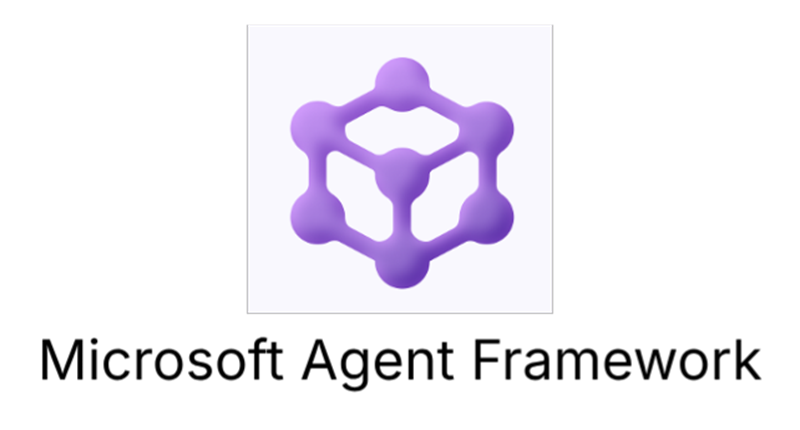
GitHub
https://aka.ms/AgentFramework
官網說明
https://learn.microsoft.com/agent-framework
Discord討論區
Microsoft Foundry Discrod 伺服器
的 # agent-framework 頻道
.NET C# 和 Python API，除了控管 LLM 的 AI Agent 之外，亦有多代理工作流(Workflow)協調功能，使開發者能 輕鬆 創建適應不同場景的智能代理，實現複雜多AI Agent 系統。
Agent 在{學術}定義上是一個能夠自主感知環境、做出決策並執行任務的軟體實體，具備以下特徵：
(以上都GitHub Copilot掰的🤖)
在 MAF (以及其他MS相關技術)中 ，AI Agent 架構概念包括以下組件：
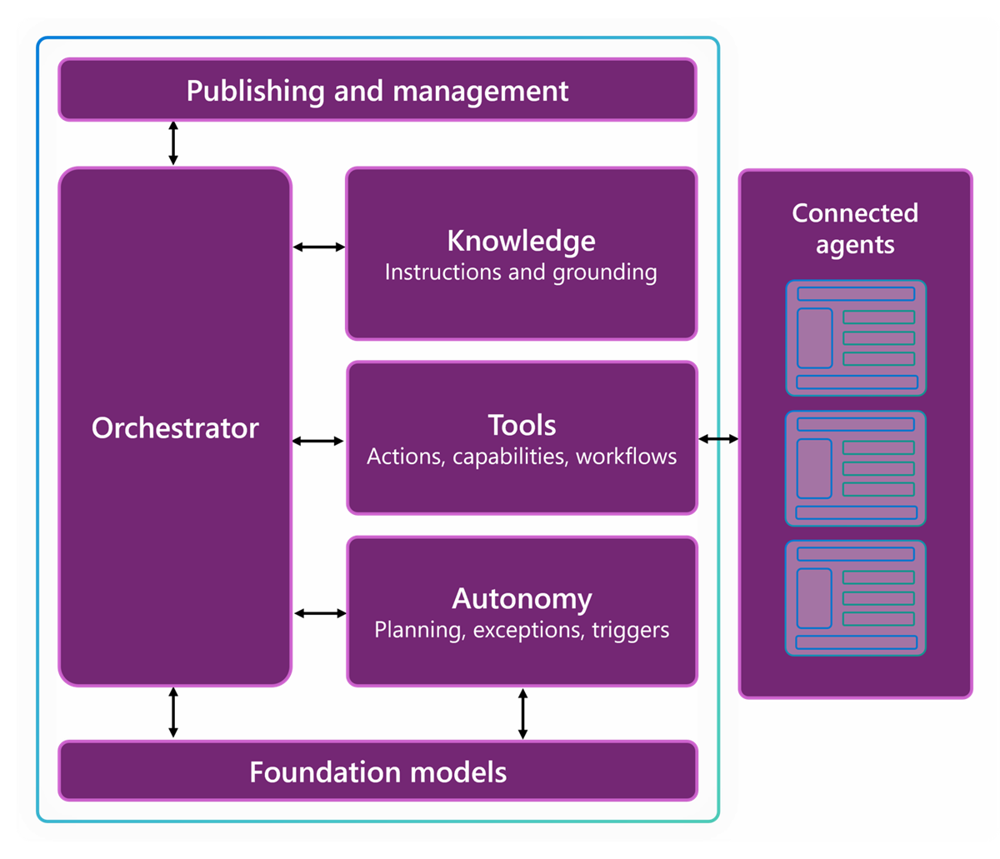
MAF 為了支援多種不同的 LLM (Large Language Model) Host環境，提供了一個『AIAgent』的一致API介面，讓開發者可以在不需要大幅改動Agent商業邏輯互動程式碼情況下，切換不同的 LLM 服務。
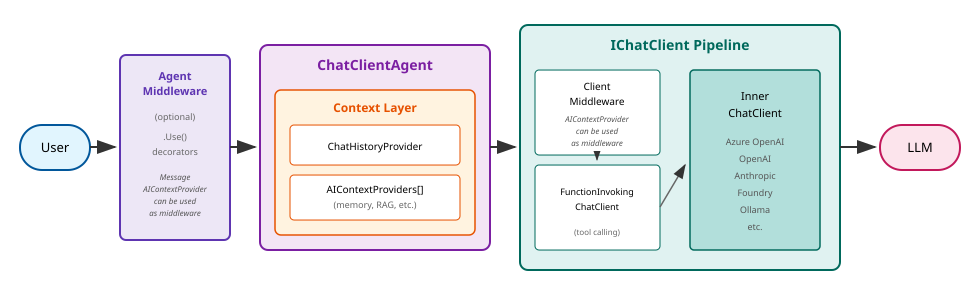
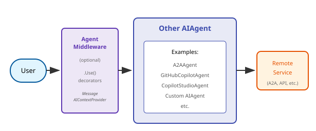
除了雲端 OpenAI, Azure AI 服務之外，地端 LLM Hosting (如： Ollama, LM Studio 等)如果是提供 OpenAI compatible REST API，也可直接用 MAF 的 IChatClient 介面串接：
var chatClient = new OpenAIClient(
new ApiKeyCredential("a-fake-key"),
new OpenAIClientOptions { Endpoint = new Uri("http://localhost:1234/v1") })
.GetResponsesClient()
.AsIChatClient(model_name)
.AsBuilder()
.ConfigureOptions(o =>
{
// Configure the chat client options here
})
.Build();
AIAgent agent = new ChatClientAgent(chatClient, name: agentName, instructions: agentInstructions);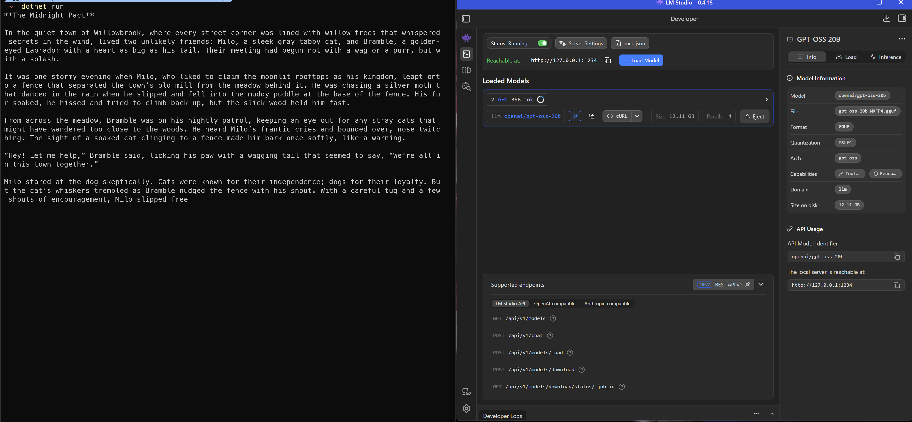
對話記錄(Session)的保存/恢復，也根據底層使用不同的 LLM Hosting Service，MAF 提供了不同的 Session 管理方式：
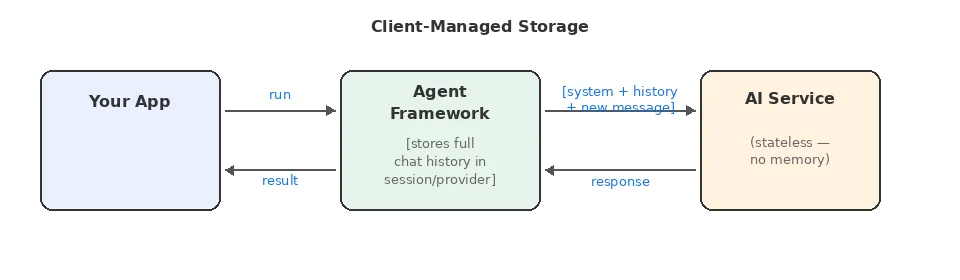
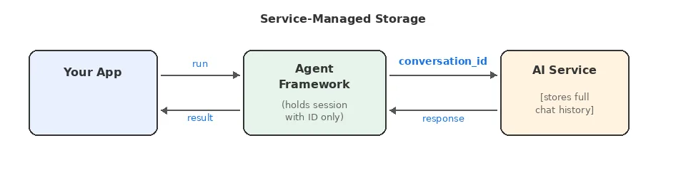
在跟 AIAgent 物件互動（使用 RunAsync() / RunStreamingAsync() 呼叫）的客戶端程式碼，都可以使用 MAF 提供的 AgentSession API 取得對話狀態資料：
// 取得 AgentSession
AgentSession session = await agent.CreateSessionAsync();
var first = await agent.RunAsync("My name is Alice.", session);
var second = await agent.RunAsync("What is my name?", session);
// 保存
var serialized = agent.SerializeSession(session);
// 恢復
AgentSession resumed = await agent.DeserializeSessionAsync(serialized);在 MAF 框架層，預設自動套用內建『InMemoryChatHistoryProvider』將對話記錄在記憶體中，當程式結束時，互動對話記錄就會消失。
InMemoryChatHistoryProvider 也內建提供了幾種壓縮對話記錄的機制(OOXXChatReducer)。
目前除了自己繼承 ChatHistoryProvider 抽象類別來實作自訂的對話記錄儲存之外，也可以使用 MAF 提供的另一個 CosmosDbChatHistoryProvider 實作，使用 Azure Cosmos DB 儲存。
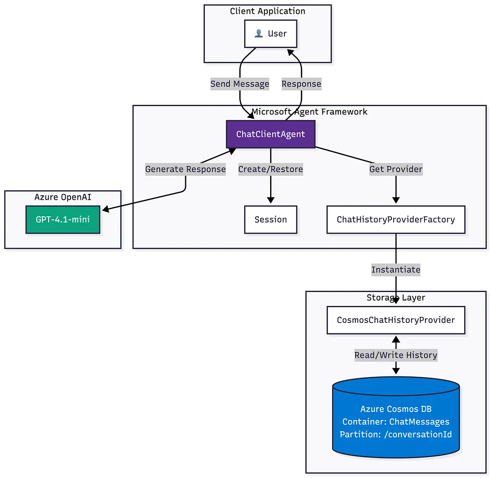
“Context Provider”
MAF 除了對話記錄專屬的 ChatHistoryProvider 之外，還提供了另一個抽象類別 AIContextProvider 讓開發者繼承該類別，自訂所有跟LLM互動上下文(Context)的儲存方式。
MAF 將 LLM 的工具/MCP呼叫抽象化，最上層的抽象類別為AITool，所以就是所有可以轉換成 AITool 的物件，都可以被 MAF 的 AIAgent 呼叫:
AIAgentTip
連接遠端 MCP endpoint 的方式，如果不是 host 在 Microsoft Foundry 專案上的『Fondry Hosted MCP Server』的話，建議使用第三方套件 Agent Framework Toolkit 會比較方便。
MAF 的 Agent Skill 載入機制可以是讀純文字 .md 檔或是由 CSharp code 裡的文字注入
先記得它有很多種花俏的就好惹 (比 AutoGen 還多樣)
C＃還沒 完全 好的
基本概念在 .NET 7 之後大同小異，所以先偷懶炒一下冷飯
(投影片素材環保複用😆)
Note
概念上需要處理同時多人/多狀態又需有一定的回應速度需求的系統，可使用 Microsoft Orleans 來輔助實現這種 non-functional requiremenot
圖片來源: Building Stateful AI Agents at Scale with Microsoft Orleans
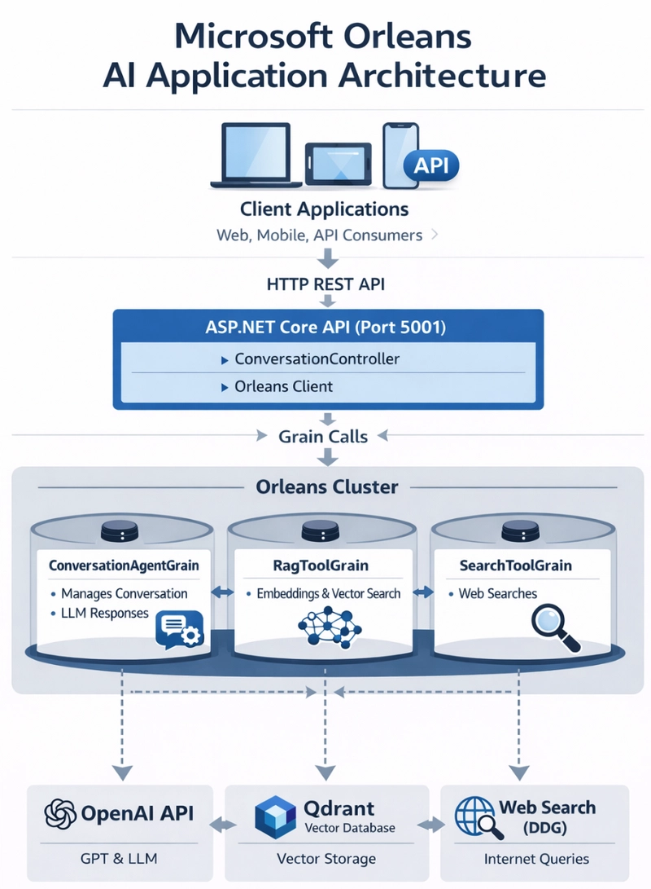
重點是在 Orleans 的 Grain 中整合 MAF AIAgent 的程式寫法：
public class OrchestrationAgentGrain : Grain, IOrchestrationAgentGrain
{
private AIAgent? _orchestrationAgent;
private AIAgent? _ragAgent;
private AIAgent? _searchAgent;
/***/
private async Task InitializeAgentFrameworkAsync()
{
// Create orchestration agent with tools
_orchestrationAgent = new ChatClientAgent(
_chatClient,
instructions: @"You are an intelligent orchestration agent...",
name: "orchestration_agent",
tools: new[] { ragTool, searchTool });
}
}敬請期待😆(還真剛好就是 2026/7/2 今晚)
Azure AI Search 服務的新功能，提供 AgenticRAG (Agentic Retrieval-Augmented Generation) 的能力，讓開發者可以配合Microsoft Foundry 建立AI Agent的雲端系統，透過 Azure AI Search 服務進行資料檢索與回應生成。
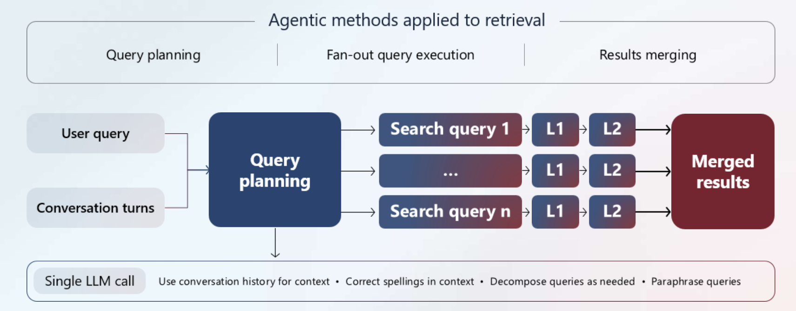
這跟之前傳統的 RAG (Retrieval-Augmented Generation) 架構不同之處是，AgenticRAG 會將使用者的查詢請求使用 LLM AI Agent 進行分析，拆成多個 AI Agent 的動作，將查詢請求轉換成多個檢索任務/工具呼叫，最後將結果進行整合與生成回應。
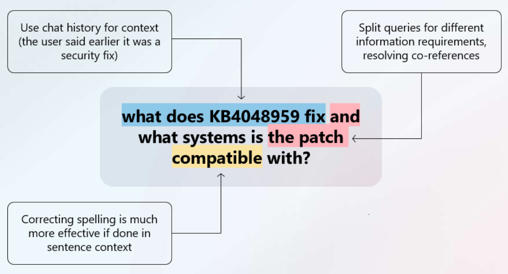
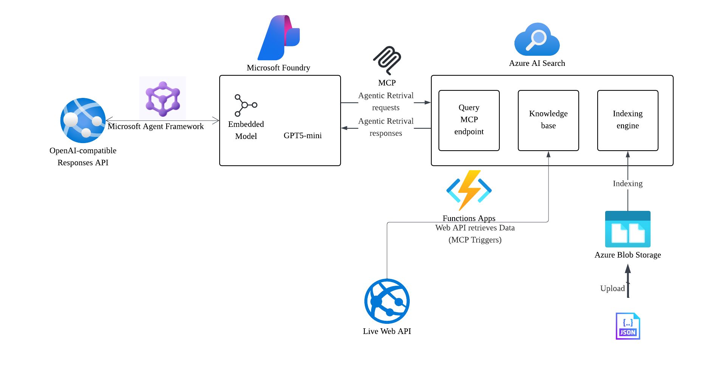
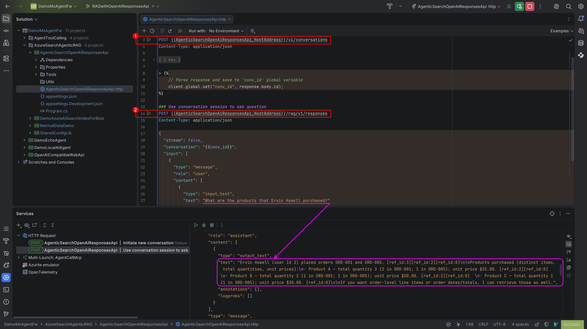
Tip
Agentic Retrival 的服務需要設定 Azure AI Search 服務和 Microsoft Foundry 彼此互相叫用的正確Managed Identity role，否則不會work
幾張截圖:
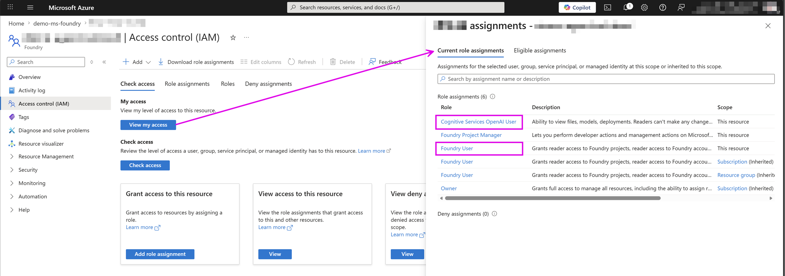
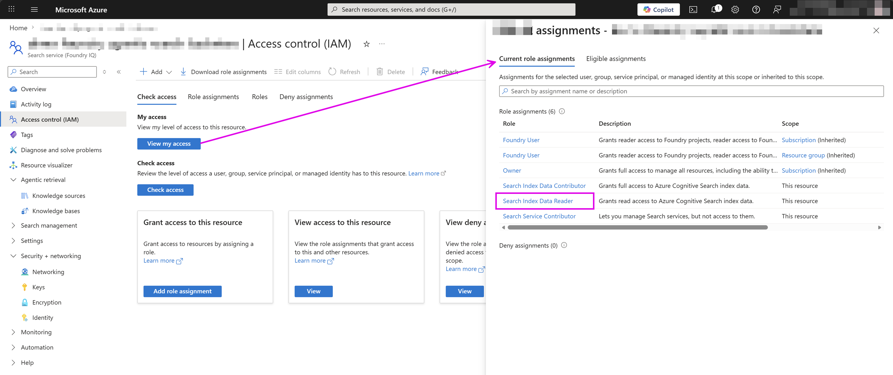
Caution
由於 C# SDK 目前還在 Preview 階段且每次新版本都極有可能不相容，程式碼範例可能會隨時變動，用 AI Coding 工具開發時請小心自己身為人類的高血壓發作😅
Tip
設定好的 Azure AI Search 服務目前預設有 MCP endpoint 可配合 Auth Token 叫用，所以除了雲端 LLM 之外，地端的也可以使用
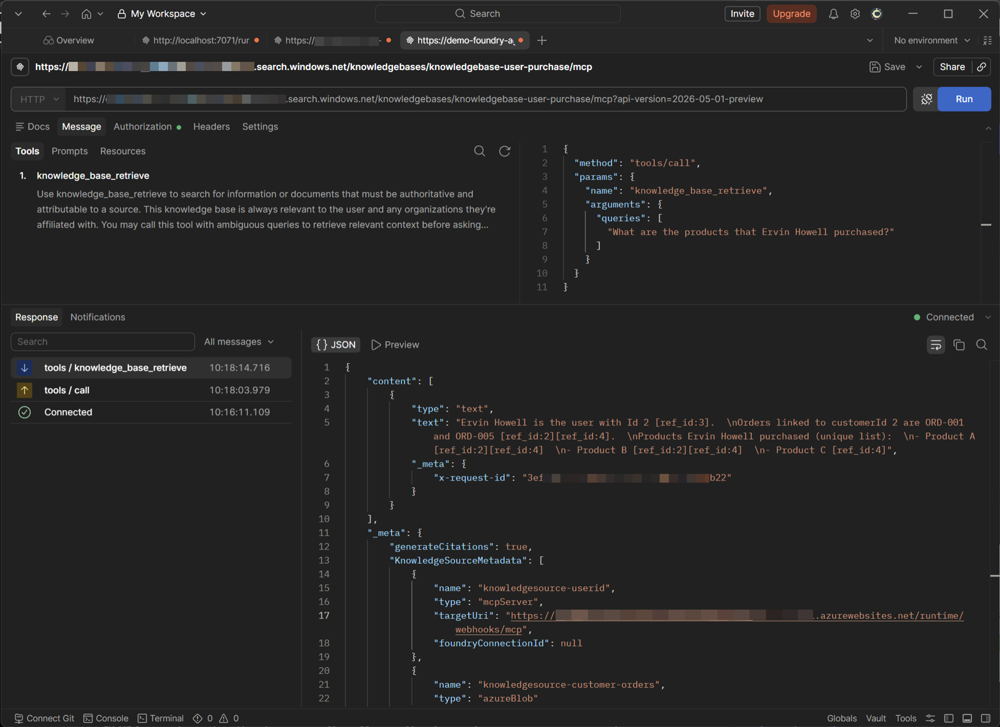
目前有兩個採用 MAF 實作的 OpenClaw .NET C# MIT授權開源版本，分別是：
屬於一個第三方公司AgentQi的開源專案 https://agentqi.dev/docs/start-here
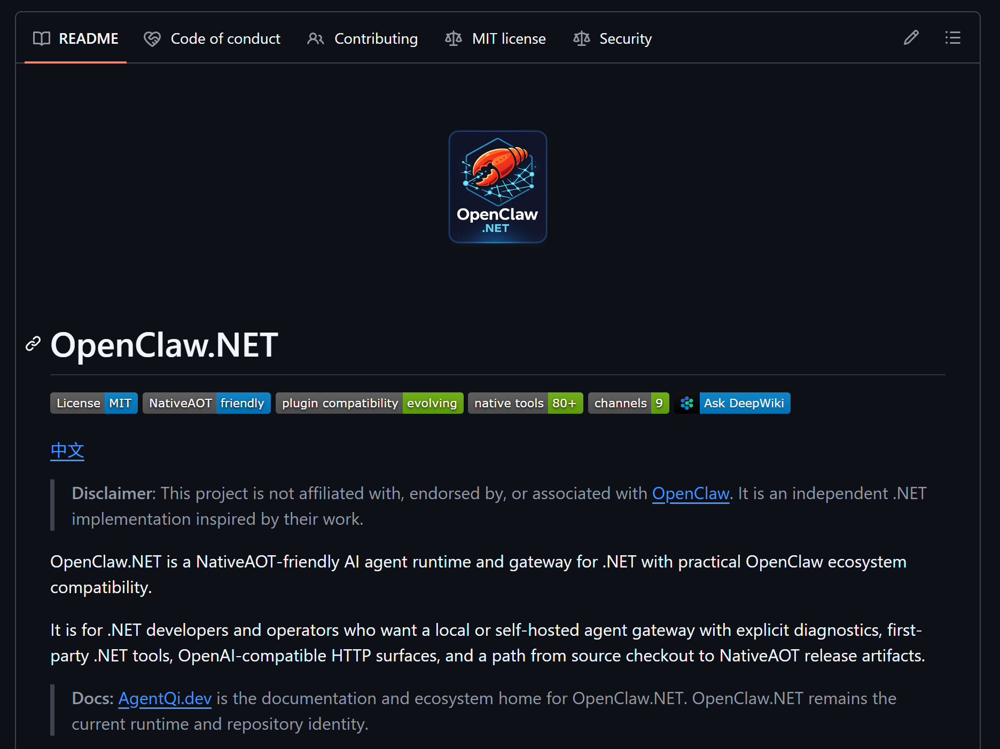
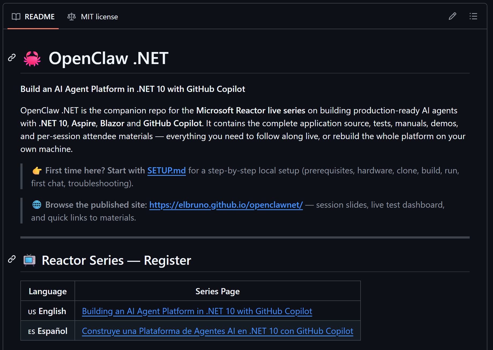
屬於微軟一個工程師的開發專案，配合定期的微軟 Reactor 教學:
https://elbruno.github.io/openclawnet/
還有官方的step-by-step教學文章：
Build your harness (claw) agent using Microsoft Agent Framework: https://devblogs.microsoft.com/agent-framework/meet-your-agent-harness-and-claw/
以及在 MAF GitHub Repo 的範例程式碼: https://github.com/microsoft/agent-framework/tree/main/dotnet/samples/02-agents/Harness
Agent definition:
https://learn.microsoft.com/en-us/dotnet/ai/conceptual/agents
Aspire for agents: Transform how you build and deploy distributed apps
https://build.microsoft.com/en-US/sessions/BRK205
Microsoft Agent Framework
https://devblogs.microsoft.com/dotnet/introducing-microsoft-agent-framework-preview/
https://devblogs.microsoft.com/foundry/introducing-microsoft-agent-framework-the-open-source-engine-for-agentic-ai-apps/
https://devblogs.microsoft.com/agent-framework/microsoft-agent-framework-version-1-0/
Microsoft.Agents.AI nuget package:
https://www.nuget.org/packages/Microsoft.Agents.AI
Chat History Storage Patterns:
https://devblogs.microsoft.com/agent-framework/chat-history-storage-patterns-in-microsoft-agent-framework/
https://learn.microsoft.com/agent-framework/integrations/chat-history-memory-provider?pivots=programming-language-csharp
eShopLite (many applied LLM AI example project): https://github.com/Azure-Samples/eShopLite
.NET 的 AI Agent 開發框架選型： https://mp.weixin.qq.com/s/lfJT6GshOuC3tduSMp4E_Q
What is Agentic RAG? (AI Agents for Beginners):
https://learn.microsoft.com/en-us/shows/ai-agents-for-beginners/what-is-agentic-rag
Build your harness (claw) agent using Microsoft Agent Framework:
https://devblogs.microsoft.com/agent-framework/meet-your-agent-harness-and-claw/
https://github.com/microsoft/agent-framework/tree/main/dotnet/samples/02-agents/Harness